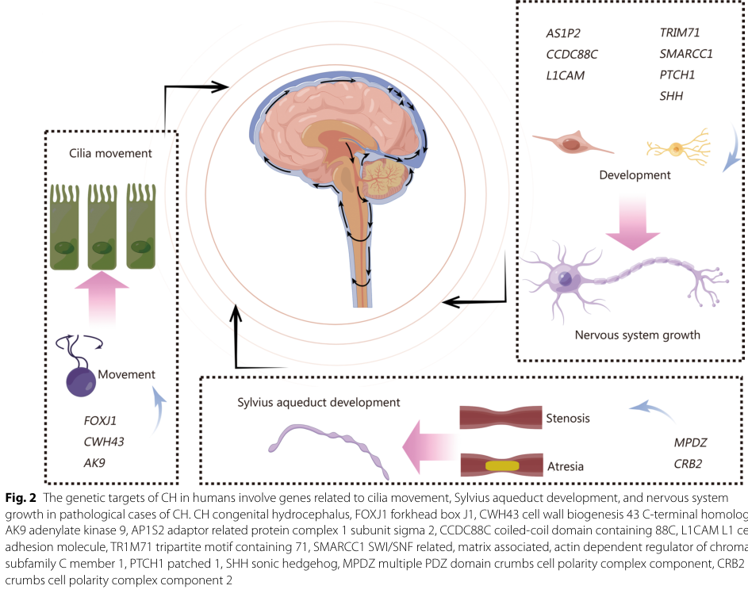

L1 syndrome is an X-linked recessive neurodevelopmental disorder caused by pathogenic variants in L1CAM (Xq28), which encodes the L1 neural cell adhesion molecule. It comprises a phenotypic spectrum historically described as overlapping clinical entities: X-linked hydrocephalus with stenosis of the aqueduct of Sylvius (HSAS), MASA syndrome (which subsumes X-linked complicated hereditary spastic paraplegia type 1, SPG1), and X-linked complicated corpus callosum agenesis. The acronym CRASH (corpus callosum hypoplasia, retardation/ intellectual disability, adducted thumbs, spastic paraplegia, hydrocephalus) is also used for the broad spectrum. Cardinal features include congenital hydrocephalus/ventriculomegaly (often with aqueductal stenosis), agenesis or hypoplasia of the corpus callosum, spasticity/spastic paraplegia, intellectual disability, and adducted thumbs. Severity ranges from prenatal-onset, often lethal hydrocephalus to milder, survivable motor and cognitive phenotypes, and all phenotypes can co-occur within a single family.
Ask a research question about L1 Syndrome. OpenScientist will conduct autonomous deep research using the Disorder Mechanisms Knowledge Base and PubMed literature (typically 10-30 minutes).
Do not include personal health information in your question. Questions and results are cached in your browser's local storage.
name: L1 Syndrome
creation_date: "2026-06-15T00:00:00Z"
category: Mendelian
disease_term:
preferred_term: L1 syndrome
term:
id: MONDO:0017140
label: L1 syndrome
description: >-
L1 syndrome is an X-linked recessive neurodevelopmental disorder caused by
pathogenic variants in L1CAM (Xq28), which encodes the L1 neural cell adhesion
molecule. It comprises a phenotypic spectrum historically described as
overlapping clinical entities: X-linked hydrocephalus with stenosis of the
aqueduct of Sylvius (HSAS), MASA syndrome (which subsumes X-linked complicated
hereditary spastic paraplegia type 1, SPG1), and X-linked complicated corpus
callosum agenesis. The acronym CRASH (corpus callosum hypoplasia, retardation/
intellectual disability, adducted thumbs, spastic paraplegia, hydrocephalus)
is also used for the broad spectrum. Cardinal features include congenital
hydrocephalus/ventriculomegaly (often with aqueductal stenosis), agenesis or
hypoplasia of the corpus callosum, spasticity/spastic paraplegia, intellectual
disability, and adducted thumbs. Severity ranges from prenatal-onset, often
lethal hydrocephalus to milder, survivable motor and cognitive phenotypes, and
all phenotypes can co-occur within a single family.
references:
- reference: PMID:20301657
title: "L1 Syndrome."
tags:
- GeneReviews
- reference: PMID:11438988
title: "Genetic and clinical aspects of X-linked hydrocephalus (L1 disease): Mutations in the L1CAM gene."
synonyms:
- HSAS
- MASA syndrome
- CRASH syndrome
- X-linked hydrocephalus
- Spastic paraplegia type 1
- SPG1
- L1CAM syndrome
- L1 disease
inheritance:
- name: X-linked recessive inheritance
inheritance_term:
preferred_term: X-linked recessive inheritance
term:
id: HP:0001419
label: X-linked recessive inheritance
description: >-
L1 syndrome is inherited in an X-linked recessive manner. Affected
individuals are usually hemizygous males; heterozygous female carriers are
usually unaffected but may occasionally show (typically mild) manifestations,
plausibly due to skewed X-inactivation.
evidence:
- reference: PMID:20301657
supports: SUPPORT
evidence_source: HUMAN_CLINICAL
snippet: >-
L1 syndrome is inherited in an X-linked manner.
explanation: >-
GeneReviews establishes X-linked inheritance for L1 syndrome.
- reference: PMID:15662685
supports: SUPPORT
evidence_source: HUMAN_CLINICAL
snippet: >-
In this family, nine X-linked hydrocephalus and five female carriers were found in three generations
explanation: >-
A multigenerational pedigree with affected males and asymptomatic female
carriers supports X-linked recessive transmission.
has_subtypes:
- name: HSAS
display_name: X-linked hydrocephalus with stenosis of the aqueduct of Sylvius (HSAS)
description: >-
The most severe end of the L1 spectrum. Affected males are born with severe
congenital hydrocephalus due to stenosis of the aqueduct of Sylvius, adducted
thumbs, and spasticity, with severe intellectual disability. Prenatal-onset
hydrocephalus can lead to stillbirth or early infant death.
genes:
- preferred_term: L1CAM
term:
id: hgnc:6470
label: L1CAM
evidence:
- reference: PMID:20301657
supports: SUPPORT
evidence_source: HUMAN_CLINICAL
snippet: >-
Males with HSAS are born with severe hydrocephalus, adducted thumbs, and spasticity; intellectual disability is severe.
explanation: >-
GeneReviews defines the severe HSAS phenotype within the L1 spectrum.
- name: MASA
display_name: MASA syndrome (mental retardation, aphasia, spastic paraplegia, adducted thumbs)
description: >-
A milder end of the L1 spectrum characterized by mental retardation
(intellectual disability), aphasia (delayed speech), spastic paraplegia
(shuffling gait), and adducted thumbs. MASA includes X-linked complicated
hereditary spastic paraplegia type 1.
genes:
- preferred_term: L1CAM
term:
id: hgnc:6470
label: L1CAM
evidence:
- reference: PMID:20301657
supports: SUPPORT
evidence_source: HUMAN_CLINICAL
snippet: >-
MASA (mental retardation ... aphasia ... spastic paraplegia ... adducted thumbs) syndrome including X-linked complicated hereditary spastic paraplegia type 1.
explanation: >-
GeneReviews defines the MASA phenotype, which subsumes X-linked complicated
hereditary spastic paraplegia type 1 (SPG1), within the L1 spectrum.
- name: SPG1
display_name: X-linked complicated hereditary spastic paraplegia type 1 (SPG1)
description: >-
The spastic paraplegia-predominant presentation of the L1 spectrum, in which
progressive spasticity and gait disturbance from corticospinal tract
involvement dominate the clinical picture. SPG1 falls within the MASA end of
the spectrum.
genes:
- preferred_term: L1CAM
term:
id: hgnc:6470
label: L1CAM
evidence:
- reference: PMID:11438988
supports: SUPPORT
evidence_source: HUMAN_CLINICAL
snippet: >-
L1 disease is a group of overlapping clinical phenotypes including X-linked hydrocephalus, MASA syndrome, spastic paraparesis type 1, and X-linked agenesis of corpus callosum.
explanation: >-
The foundational review lists spastic paraparesis type 1 (SPG1) as one of
the overlapping L1 phenotypes.
- name: X-linked ACC
display_name: X-linked complicated corpus callosum agenesis
description: >-
A presentation in which agenesis or hypoplasia of the corpus callosum is a
prominent feature, accompanied by variable spasticity, intellectual
disability, and ventricular abnormalities.
genes:
- preferred_term: L1CAM
term:
id: hgnc:6470
label: L1CAM
evidence:
- reference: PMID:20301657
supports: SUPPORT
evidence_source: HUMAN_CLINICAL
snippet: >-
X-linked complicated corpus callosum agenesis.
explanation: >-
GeneReviews lists X-linked complicated corpus callosum agenesis as one of
the L1 syndrome clinical phenotypes.
prevalence:
- population: Live male births (HSAS / X-linked hydrocephalus)
percentage: ~1 in 30,000 live male births
notes: >-
HSAS (X-linked hydrocephalus) is described as the most common inherited form
of hydrocephalus.
evidence:
- reference: PMID:31572438
supports: SUPPORT
evidence_source: HUMAN_CLINICAL
snippet: >-
X-linked hydrocephalus (XLH), a genetic disorder, has an incidence of 1/30,000 male births. The great proportion of XLH is ascribed to loss-of-function mutations of L1 cell adhesion molecule gene (L1CAM)
explanation: >-
Reports the 1/30,000 male-birth incidence of L1CAM-related X-linked
hydrocephalus, the most common inherited form of hydrocephalus.
- reference: PMID:30365056
supports: SUPPORT
evidence_source: HUMAN_CLINICAL
snippet: >-
Hydrocephalus due to aqueductal stenosis (HSAS; Online Mendelian Inheritance in Man #307000) is a rare X‑linked, recessively‑inherited disease characterized by severe hydrocephaly
explanation: >-
This case report frames HSAS as a rare X-linked recessive disease.
- population: Congenital hydrocephalus (overall global)
percentage: ~1 in 500 births (congenital hydrocephalus overall)
notes: >-
L1CAM is one of the small set of confirmed human congenital-hydrocephalus
genes; genetics may contribute to up to 40% of congenital hydrocephalus but a
precise genetic etiology is identified in fewer than 5% of cases.
evidence:
- reference: PMID:39135208
supports: SUPPORT
evidence_source: HUMAN_CLINICAL
snippet: >-
The global prevalence rate for congenital hydrocephalus (CH) is approximately one out of every five hundred births
explanation: >-
Provides the epidemiologic framing for congenital hydrocephalus, within
which L1CAM is a confirmed causal gene.
pathophysiology:
- name: Defective L1CAM Neural Cell Adhesion
description: >-
Loss-of-function or hypomorphic variants in L1CAM impair the function of the
L1 cell adhesion molecule, a single-pass transmembrane glycoprotein of the
immunoglobulin superfamily expressed in neurons and Schwann cells. L1 is
essential for nervous system development, mediating cell adhesion, signaling,
and membrane trafficking. Mutations are distributed across the functional
protein domains; the precise mechanisms by which they cause loss of L1
function are incompletely understood.
gene:
preferred_term: L1CAM
description: L1 cell adhesion molecule, an Ig-superfamily neuronal cell adhesion molecule.
modifier: ABNORMAL
term:
id: hgnc:6470
label: L1CAM
cell_types:
- preferred_term: neuron
term:
id: CL:0000540
label: neuron
- preferred_term: myelinating Schwann cell
term:
id: CL:0000218
label: myelinating Schwann cell
biological_processes:
- preferred_term: cell adhesion
term:
id: GO:0007155
label: cell adhesion
modifier: DECREASED
- preferred_term: nervous system development
term:
id: GO:0007399
label: nervous system development
modifier: ABNORMAL
evidence:
- reference: PMID:11438988
supports: SUPPORT
evidence_source: HUMAN_CLINICAL
snippet: >-
The responsible gene, L1CAM, encodes the L1 protein which is a member of the immunoglobulin superfamily of neuronal cell adhesion molecules. The L1 protein is expressed in neurons and Schwann cells and seems to be essential for nervous system development and function.
explanation: >-
Establishes L1CAM as the causal gene, its Ig-superfamily neural cell
adhesion identity, and its expression in neurons and Schwann cells.
downstream:
- target: Impaired Axon Guidance and Neurite Outgrowth
causal_link_type: DIRECT
description: >-
Defective L1-mediated adhesion and signaling impairs axon guidance,
neurite outgrowth, and neuronal migration during CNS development.
- name: Impaired Axon Guidance and Neurite Outgrowth
description: >-
L1 normally promotes neurite outgrowth, axon guidance/pathfinding, and
neuronal migration. A 2023 mechanistic study showed that the L1-70 fragment
binds LC3 (an autophagy-related protein) via an extracellular LC3-interacting
region (LIR) motif in the fourth fibronectin type III domain, and that this
interaction is required for L1-mediated neurite outgrowth and neuronal
survival, linking L1CAM processing to autophagy-related machinery. Loss of L1
function therefore impairs the formation of major axon tracts.
cell_types:
- preferred_term: neuron
term:
id: CL:0000540
label: neuron
biological_processes:
- preferred_term: axon guidance
term:
id: GO:0007411
label: axon guidance
modifier: ABNORMAL
- preferred_term: neuron projection development
term:
id: GO:0031175
label: neuron projection development
modifier: DECREASED
- preferred_term: neuron migration
term:
id: GO:0001764
label: neuron migration
modifier: ABNORMAL
evidence:
- reference: PMID:37569906
supports: SUPPORT
evidence_source: IN_VITRO
snippet: >-
The disruption of the L1-LC3 interaction reduces L1-mediated neurite outgrowth and neuronal survival.
explanation: >-
In vitro evidence that an L1CAM-dependent interaction is required for
neurite outgrowth and neuronal survival, supporting impaired neurite
outgrowth as a consequence of L1 dysfunction.
- reference: PMID:37569906
supports: SUPPORT
evidence_source: IN_VITRO
snippet: >-
L1-70 interacts with LC3 via the extracellular LIR motif in the fourth fibronectin type III domain
explanation: >-
Identifies the molecular L1-70/LC3 interaction underlying L1-dependent
neurite outgrowth.
downstream:
- target: Corticospinal Tract and Commissural Defects
causal_link_type: DIRECT
description: >-
Failure of axon pathfinding and tract formation leads to maldevelopment of
the corpus callosum and corticospinal tracts.
- target: Aqueductal Stenosis and Hydrocephalus
causal_link_type: INDIRECT_KNOWN_INTERMEDIATES
description: >-
Abnormal neurodevelopment contributes to stenosis of the cerebral aqueduct
and impaired CSF flow.
- name: Corticospinal Tract and Commissural Defects
description: >-
Defective axon guidance produces agenesis or hypoplasia of the corpus
callosum and hypoplasia of the corticospinal tracts. These long-tract and
midline commissural defects underlie the spastic paraplegia, gait
disturbance, and contribute to intellectual disability in the L1 spectrum.
locations:
- preferred_term: corpus callosum
term:
id: UBERON:0002336
label: corpus callosum
- preferred_term: corticospinal tract
term:
id: UBERON:0002707
label: corticospinal tract
biological_processes:
- preferred_term: corpus callosum development
term:
id: GO:0022038
label: corpus callosum development
modifier: ABNORMAL
- preferred_term: corticospinal tract morphogenesis
term:
id: GO:0021957
label: corticospinal tract morphogenesis
modifier: ABNORMAL
evidence:
- reference: PMID:11438988
supports: SUPPORT
evidence_source: HUMAN_CLINICAL
snippet: >-
The patients are characterized by hydrocephalus, agenesis or hypoplasia of corpus callosum and corticospinal tracts, mental retardation, spastic paraplegia, and adducted thumbs.
explanation: >-
Establishes corpus callosum and corticospinal tract defects as core
neuroanatomic features of L1 disease.
- name: Aqueductal Stenosis and Hydrocephalus
description: >-
Stenosis of the aqueduct of Sylvius and impaired cerebrospinal fluid
circulation produce ventriculomegaly and congenital hydrocephalus, the
hallmark of HSAS/X-linked hydrocephalus. In severe cases this manifests
prenatally and can be lethal; underlying brain malformations limit recovery
even after neurosurgical CSF diversion.
locations:
- preferred_term: midbrain cerebral aqueduct
term:
id: UBERON:0002289
label: midbrain cerebral aqueduct
biological_processes:
- preferred_term: cerebrospinal fluid circulation
term:
id: GO:0090660
label: cerebrospinal fluid circulation
modifier: ABNORMAL
evidence:
- reference: PMID:34801143
supports: SUPPORT
evidence_source: HUMAN_CLINICAL
snippet: >-
Hydrocephalus, the abnormal accumulation and impaired circulation/clearance of cerebrospinal fluid, occurs as a common phenotypic feature of a diverse group of genetic syndromes.
explanation: >-
A syndromic-hydrocephalus review (which discusses L1 syndrome) frames
hydrocephalus as impaired CSF circulation/clearance.
- reference: PMID:30365056
supports: SUPPORT
evidence_source: HUMAN_CLINICAL
snippet: >-
The variants affect the highly conserved amino acids which are located in the key domains of the protein (the fourth Ig domain and second FnIII domain, respectively).
explanation: >-
Pathogenic L1CAM variants in conserved functional domains were identified
in fetuses presenting with severe ventriculomegaly/hydrocephalus.
phenotypes:
- category: Phenotypic abnormality
name: Hydrocephalus
description: >-
Congenital, often prenatal-onset hydrocephalus is the hallmark of the severe
(HSAS) end of the L1 spectrum.
phenotype_term:
preferred_term: Hydrocephalus
term:
id: HP:0000238
label: Hydrocephalus
subtype: HSAS
evidence:
- reference: PMID:20301657
supports: SUPPORT
evidence_source: HUMAN_CLINICAL
snippet: >-
Males with HSAS are born with severe hydrocephalus, adducted thumbs, and spasticity; intellectual disability is severe.
explanation: >-
GeneReviews documents severe congenital hydrocephalus in HSAS.
- category: Phenotypic abnormality
name: Ventriculomegaly
description: >-
Enlargement of the cerebral ventricles, frequently detected by prenatal
ultrasound or fetal MRI.
phenotype_term:
preferred_term: Ventriculomegaly
term:
id: HP:0002119
label: Ventriculomegaly
evidence:
- reference: PMID:32416898
supports: SUPPORT
evidence_source: HUMAN_CLINICAL
snippet: >-
We presented three fetuses with hydrocephalus and agenesis of the corpus callosum detected by ultrasound
explanation: >-
Fetal hydrocephalus/ventriculomegaly with corpus callosum agenesis was
detected by ultrasound in L1CAM-mutation fetuses.
- category: Phenotypic abnormality
name: Aqueductal stenosis
description: >-
Stenosis of the aqueduct of Sylvius is the classic structural cause of
obstructive hydrocephalus in HSAS.
phenotype_term:
preferred_term: Aqueductal stenosis
term:
id: HP:0002410
label: Aqueductal stenosis
subtype: HSAS
evidence:
- reference: PMID:30365056
supports: SUPPORT
evidence_source: HUMAN_CLINICAL
snippet: >-
Hydrocephalus due to aqueductal stenosis (HSAS; Online Mendelian Inheritance in Man #307000) is a rare X‑linked, recessively‑inherited disease characterized by severe hydrocephaly
explanation: >-
Defines HSAS as hydrocephalus due to aqueductal stenosis.
- category: Phenotypic abnormality
name: Agenesis of corpus callosum
description: >-
Complete absence of the corpus callosum, part of the CRASH/L1 spectrum; may
be complete or partial and is often detected prenatally.
phenotype_term:
preferred_term: Agenesis of corpus callosum
term:
id: HP:0001274
label: Agenesis of corpus callosum
subtype: X-linked ACC
evidence:
- reference: PMID:32416898
supports: SUPPORT
evidence_source: HUMAN_CLINICAL
snippet: >-
We presented three fetuses with hydrocephalus and agenesis of the corpus callosum detected by ultrasound
explanation: >-
Agenesis of the corpus callosum was a presenting feature in L1CAM-mutation
fetuses.
- category: Phenotypic abnormality
name: Hypoplasia of the corpus callosum
description: >-
Underdevelopment of the corpus callosum (the "C" in CRASH), part of the L1
neuroanatomic spectrum.
phenotype_term:
preferred_term: Hypoplasia of the corpus callosum
term:
id: HP:0002079
label: Hypoplasia of the corpus callosum
subtype: X-linked ACC
evidence:
- reference: PMID:11438988
supports: SUPPORT
evidence_source: HUMAN_CLINICAL
snippet: >-
The patients are characterized by hydrocephalus, agenesis or hypoplasia of corpus callosum and corticospinal tracts, mental retardation, spastic paraplegia, and adducted thumbs.
explanation: >-
The foundational review lists agenesis or hypoplasia of the corpus
callosum as a core feature.
- category: Phenotypic abnormality
name: Adducted thumb
description: >-
Adducted (clasped) thumbs are a characteristic, though not universal, feature
of L1 syndrome; reported in approximately 45% of cases in foundational
literature.
phenotype_term:
preferred_term: Adducted thumb
term:
id: HP:0001181
label: Adducted thumb
evidence:
- reference: PMID:11438988
supports: SUPPORT
evidence_source: HUMAN_CLINICAL
snippet: >-
The patients are characterized by hydrocephalus, agenesis or hypoplasia of corpus callosum and corticospinal tracts, mental retardation, spastic paraplegia, and adducted thumbs.
explanation: >-
Adducted thumbs are listed among the characteristic features of L1 disease.
- category: Phenotypic abnormality
name: Spastic paraplegia
description: >-
Spasticity and spastic paraplegia, prominent in the MASA/SPG1 end of the
spectrum, reflect corticospinal tract involvement.
phenotype_term:
preferred_term: Spastic paraplegia
term:
id: HP:0001258
label: Spastic paraplegia
clinical_course: PROGRESSIVE
subtype: SPG1
evidence:
- reference: PMID:11438988
supports: SUPPORT
evidence_source: HUMAN_CLINICAL
snippet: >-
The patients are characterized by hydrocephalus, agenesis or hypoplasia of corpus callosum and corticospinal tracts, mental retardation, spastic paraplegia, and adducted thumbs.
explanation: >-
Spastic paraplegia is a core feature of the L1 spectrum.
- category: Phenotypic abnormality
name: Intellectual disability
description: >-
Intellectual disability is common across the spectrum, ranging from mild
(IQ 50-70) to moderate (IQ 30-50) in less severely affected males, and severe
in HSAS.
phenotype_term:
preferred_term: Intellectual disability
term:
id: HP:0001249
label: Intellectual disability
evidence:
- reference: PMID:20301657
supports: SUPPORT
evidence_source: HUMAN_CLINICAL
snippet: >-
intellectual disability ranges from mild (IQ: 50-70) to moderate (IQ: 30-50).
explanation: >-
GeneReviews documents the range of intellectual disability in less
severely affected males.
- category: Phenotypic abnormality
name: Aphasia
description: >-
Aphasia (delayed/impaired speech), the "A" in MASA, occurs in the milder
surviving phenotypes.
phenotype_term:
preferred_term: Aphasia
term:
id: HP:0002381
label: Aphasia
subtype: MASA
evidence:
- reference: PMID:20301657
supports: SUPPORT
evidence_source: HUMAN_CLINICAL
snippet: >-
MASA (mental retardation ... aphasia ... spastic paraplegia ... adducted thumbs) syndrome
explanation: >-
Aphasia (delayed speech) is one of the four components of the MASA acronym
defined in GeneReviews.
- category: Phenotypic abnormality
name: Shuffling gait
description: >-
Shuffling gait, part of the MASA acronym, reflects corticospinal tract
dysfunction/spastic paraparesis.
phenotype_term:
preferred_term: Shuffling gait
term:
id: HP:0002362
label: Shuffling gait
subtype: MASA
evidence:
- reference: PMID:20301657
supports: SUPPORT
evidence_source: HUMAN_CLINICAL
snippet: >-
spastic paraplegia shuffling gait adducted thumbs syndrome
explanation: >-
Shuffling gait (the spastic-paraplegia component) is part of the MASA
acronym defined in GeneReviews.
- category: Phenotypic abnormality
name: Corticospinal tract hypoplasia
description: >-
Hypoplasia of the corticospinal tracts is part of the core neuroanatomic
spectrum and likely underlies spastic paraplegia and spastic gait.
phenotype_term:
preferred_term: Corticospinal tract hypoplasia
term:
id: HP:0007016
label: Corticospinal tract hypoplasia
evidence:
- reference: PMID:11438988
supports: SUPPORT
evidence_source: HUMAN_CLINICAL
snippet: >-
The patients are characterized by hydrocephalus, agenesis or hypoplasia of corpus callosum and corticospinal tracts, mental retardation, spastic paraplegia, and adducted thumbs.
explanation: >-
Hypoplasia of the corticospinal tracts is listed among core L1 features.
genetic:
- name: L1CAM
gene_term:
preferred_term: L1CAM
term:
id: hgnc:6470
label: L1CAM
association: Loss-of-function and missense variants
relationship_type: CAUSATIVE
variant_origin: GERMLINE
inheritance:
- name: X-linked recessive inheritance
inheritance_term:
preferred_term: X-linked recessive inheritance
term:
id: HP:0001419
label: X-linked recessive inheritance
notes: >-
More than 280 distinct L1CAM variants have been reported, approximately 50%
missense, with many "private" to individual families. Variant types include
missense, nonsense, frameshift, splice-altering, and structural variants/CNVs.
A genotype-phenotype trend exists: truncating variants (especially
extracellular-domain truncations producing absent/non-detectable protein) are
associated with severe phenotypes and higher infant mortality, whereas
missense and cytoplasmic-domain variants tend to produce milder phenotypes.
evidence:
- reference: PMID:11438988
supports: SUPPORT
evidence_source: HUMAN_CLINICAL
snippet: >-
Missense mutations in extracellular domains or mutations in cytoplasmic regions cause milder phenotypes than those leading to truncation in extracellular domains or to non-detectable L1 protein.
explanation: >-
Establishes the genotype-phenotype correlation in L1CAM disease.
- reference: PMID:32416898
supports: SUPPORT
evidence_source: HUMAN_CLINICAL
snippet: >-
Its mutations result in L1 syndrome which is associated with brain malformation and nervous developmental delay.
explanation: >-
Confirms L1CAM mutations as causal for L1 syndrome with brain malformation
and developmental delay.
treatments:
- name: Cerebrospinal Fluid Shunting
description: >-
Shunting of cerebrospinal fluid (e.g., ventriculoperitoneal shunt;
endoscopic third ventriculostomy in selected cases) is performed as needed to
reduce intracranial pressure in hydrocephalus. Neurodevelopmental outcome in
severe cases may remain poor despite CSF diversion because of underlying
brain malformation.
treatment_term:
preferred_term: cerebrospinal fluid shunting procedure
term:
id: MAXO:0000004
label: surgical procedure
therapeutic_modality: SURGERY
target_phenotypes:
- preferred_term: Hydrocephalus
term:
id: HP:0000238
label: Hydrocephalus
evidence:
- reference: PMID:20301657
supports: SUPPORT
evidence_source: HUMAN_CLINICAL
snippet: >-
Shunting of the cerebrospinal fluid should be performed as needed to reduce intracranial pressure.
explanation: >-
GeneReviews recommends CSF shunting for hydrocephalus management.
- name: Genetic Counseling
description: >-
Genetic counseling for families with a known L1CAM variant, including
heterozygote (carrier) detection. Once the L1CAM pathogenic variant is
identified, prenatal testing and preimplantation genetic testing are possible.
treatment_term:
preferred_term: genetic counseling
term:
id: MAXO:0000079
label: genetic counseling
evidence:
- reference: PMID:20301657
supports: SUPPORT
evidence_source: HUMAN_CLINICAL
snippet: >-
Once the L1CAM pathogenic variant has been identified in an affected family member, heterozygote detection, prenatal testing for a pregnancy at increased risk, and preimplantation genetic testing are possible.
explanation: >-
GeneReviews supports genetic counseling, carrier detection, prenatal and
preimplantation testing.
- name: Prenatal Genetic Testing
description: >-
Prenatal molecular testing for an L1CAM pathogenic variant in a pregnancy at
increased risk, using DNA from chorionic villus sampling or amniocentesis.
treatment_term:
preferred_term: prenatal genetic testing
term:
id: MAXO:0000529
label: prenatal genetic testing
evidence:
- reference: PMID:20301657
supports: SUPPORT
evidence_source: HUMAN_CLINICAL
snippet: >-
prenatal testing for a pregnancy at increased risk, and preimplantation genetic testing are possible.
explanation: >-
GeneReviews supports prenatal genetic testing once the familial variant is
known.
- name: Supportive and Rehabilitative Care
description: >-
Multidisciplinary supportive management with pediatrics, child neurology,
neurosurgery, rehabilitation, and clinical genetics. Individualized
educational programming for developmental delay/intellectual disability;
standard treatment for spasticity; a splint may help reduce thumb adduction
(surgery is not generally indicated). There is no disease-modifying or
curative therapy for L1 syndrome.
treatment_term:
preferred_term: supportive care
term:
id: MAXO:0000950
label: supportive care
evidence:
- reference: PMID:20301657
supports: SUPPORT
evidence_source: HUMAN_CLINICAL
snippet: >-
It is best to involve a multidisciplinary team with expertise in pediatrics, child neurology, neurosurgery, rehabilitation, and clinical genetics.
explanation: >-
GeneReviews recommends multidisciplinary supportive and rehabilitative
management.
- reference: PMID:11438988
supports: SUPPORT
evidence_source: HUMAN_CLINICAL
snippet: >-
At present, there is no therapy for the prevention or cure of patients' neurological disabilities.
explanation: >-
Confirms the absence of curative/disease-modifying therapy.
experimental_models:
- name: L1-201 (D201) point-mutant mouse
description: >-
A mouse model of L1 syndrome carrying a mutation at aspartic acid position 201
in the extracellular domain of L1. Male L1-201 mutants show significantly
worse learning and memory after experimental traumatic brain injury, modeling
extracellular-domain L1CAM variant consequences.
evidence:
- reference: PMID:38474289
supports: SUPPORT
evidence_source: MODEL_ORGANISM
snippet: >-
we utilized a novel mouse model of L1 syndrome with a mutation at aspartic acid position 201 in the extracellular domain of L1 (L1-201).
explanation: >-
Describes the L1-201 mouse as a model of L1 syndrome with an
extracellular-domain mutation.
- name: L1 third-FNIII-domain dibasic-motif mutant mouse
description: >-
Mice with disruption of the dibasic RK/KR sequence at position 858-863 in the
third fibronectin type III domain of L1 (an extracellular-domain mutation)
show enhanced hippocampal neuronal cell death, increased astrogliosis, and
behavioral alterations, modeling the more severe extracellular-domain variant
phenotype.
evidence:
- reference: PMID:37238646
supports: SUPPORT
evidence_source: MODEL_ORGANISM
snippet: >-
Mutant mice display higher numbers of caspase 3-positive neurons, a reduced number of principle neurons in the hippocampus, and an enhanced number of glial cells.
explanation: >-
Demonstrates neuronal cell death and astrogliosis from an
extracellular-domain L1 mutation in mice.
- reference: PMID:37238646
supports: SUPPORT
evidence_source: MODEL_ORGANISM
snippet: >-
mutations in the extracellular domain were shown to cause a severe phenotype more often than mutations in the intracellular domain.
explanation: >-
Supports the genotype-phenotype correlation (extracellular > intracellular
severity) in a model context.
L1 syndrome is an X-linked recessive neurodevelopmental disorder caused by pathogenic variants in L1CAM (Xq28), encompassing a phenotypic spectrum historically described as X-linked hydrocephalus with stenosis of the aqueduct of Sylvius (HSAS), MASA syndrome, SPG1 (X-linked spastic paraplegia type 1), and CRASH syndrome. Cardinal features include congenital hydrocephalus/ventriculomegaly (often with aqueductal stenosis), corpus callosum agenesis/hypoplasia, spasticity/spastic paraplegia, intellectual disability, and (in ~45%) adducted thumbs. Disease severity ranges from prenatal-onset lethal hydrocephalus to milder, survivable motor/cognitive phenotypes. (weller2001geneticandclinical pages 1-2)
Two 2023–2024 advances particularly relevant to mechanism and translational framing are: (i) a mechanistic connection between L1 processing and autophagy machinery via LC3 binding, required for L1-dependent neurite outgrowth and neuronal survival (loers2023interactionofl1cam pages 14-16, loers2023interactionofl1cam pages 2-4); and (ii) a 2024 synthesis of congenital hydrocephalus genetics that places L1CAM among the small set of confirmed human congenital-hydrocephalus genes and categorizes mechanisms (neurodevelopment, cilia/CSF flow, etc.), including a summary figure (liu2024congenitalhydrocephalusa pages 1-3, liu2024congenitalhydrocephalusa media 5d669376).
L1 syndrome (also termed “L1 disease” in foundational literature) is a group of overlapping X-linked phenotypes caused by L1CAM mutations and classically including HSAS, MASA, SPG1, and X-linked agenesis of the corpus callosum; the broad clinical spectrum is often referred to as CRASH syndrome (weller2001geneticandclinical pages 1-2, silan2005anovell1cam pages 1-2).
The knowledge base–relevant information is drawn from: - Aggregated disease-level resources and curated databases (e.g., Open Targets disease mapping to MONDO) (OpenTargets Search: L1 syndrome-L1CAM) - Human clinical genetics reviews and case reports (prenatal and postnatal) (weller2001geneticandclinical pages 1-2, ochando2016prenataldiagnosisof pages 2-3, li2020l1cammutationsin pages 1-3) - Model organism and mechanistic experimental studies (mouse/in vitro) (loers2023interactionofl1cam pages 14-16, jiang2024singlenucleotidepolymorphism pages 1-2).
URL examples: - Weller & Gärtner 2001 (Human Mutation; 2001-07; DOI URL): https://doi.org/10.1002/humu.1144 (weller2001geneticandclinical pages 1-2) - Liu et al. 2024 (Military Medical Research; 2024-08; DOI URL): https://doi.org/10.1186/s40779-024-00560-5 (liu2024congenitalhydrocephalusa pages 1-3)
Primary cause: pathogenic germline variation in L1CAM (Xq28), an Ig-superfamily neuronal cell adhesion molecule required for nervous system development and multiple neurodevelopmental processes (weller2001geneticandclinical pages 1-2, silan2005anovell1cam pages 1-2).
Inheritance: typically X-linked recessive; affected individuals are usually hemizygous males, while heterozygous females are often asymptomatic but can occasionally show manifestations, plausibly due to skewed X-inactivation (silan2005anovell1cam pages 2-3).
For a Mendelian disease, the major risk factor is carrier status in the mother and familial history of affected males; prenatal case reports emphasize recurrence in pedigrees and the role of targeted L1CAM analysis (ochando2016prenataldiagnosisof pages 2-3, ochando2016prenataldiagnosisof pages 1-2).
No protective genetic variants or environmental protective factors were identified in the retrieved evidence. L1 syndrome is not typically conceptualized as gene–environment driven; however, severity may be modulated by variant class/domain and potentially genetic background (model systems show allele/background dependence for hydrocephalus phenotypes) (congiu2023micemutatedin pages 16-17).
Commonly described features across the L1 spectrum include: - Hydrocephalus/ventriculomegaly, often congenital and sometimes prenatal-onset (weller2001geneticandclinical pages 1-2, li2020l1cammutationsin pages 3-4) - Agenesis/hypoplasia of the corpus callosum (weller2001geneticandclinical pages 1-2, ochando2016prenataldiagnosisof pages 2-3) - Spastic paraplegia/spasticity with gait disturbance (weller2001geneticandclinical pages 1-2, gasser2010efnsguidelineson pages 8-9) - Intellectual disability/developmental delay (weller2001geneticandclinical pages 1-2, li2020l1cammutationsin pages 3-4) - Adducted thumbs (~45% in a foundational review) (weller2001geneticandclinical pages 1-2) - MASA-associated features including aphasia/speech impairment and shuffling gait (li2020l1cammutationsin pages 1-3, gasser2010efnsguidelineson pages 8-9)
Prenatal ultrasound and fetal MRI findings reported in L1CAM-related disease include severe ventriculomegaly/hydrocephalus, third ventricle dilation, and corpus callosum agenesis; absent cavum septum pellucidum has been described in affected fetuses (li2020l1cammutationsin pages 3-4, ochando2016prenataldiagnosisof pages 1-2).
A structured HPO mapping is provided below.
| Phenotype | Suggested HPO term(s) | Onset / frequency / notes | Evidence sources |
|---|---|---|---|
| Hydrocephalus / ventriculomegaly | HP:0000238 Hydrocephalus; HP:0002119 Ventriculomegaly | Often prenatal or congenital; may begin in utero and range from severe fetal hydrocephalus to milder ventricular enlargement; core hallmark of L1 syndrome/HSAS (weller2001geneticandclinical pages 1-2, li2020l1cammutationsin pages 3-4, li2020l1cammutationsin pages 1-3) | (weller2001geneticandclinical pages 1-2, li2020l1cammutationsin pages 3-4, li2020l1cammutationsin pages 1-3) |
| Aqueductal stenosis | HP:0002620 Stenosis of the cerebral aqueduct | Classic feature of HSAS/X-linked hydrocephalus; commonly inferred from prenatal/postnatal neuroimaging and disease definition (weller2001geneticandclinical pages 1-2, varagur2022syndromichydrocephalus. pages 1-3, varagur2022syndromichydrocephalus. pages 19-23) | (weller2001geneticandclinical pages 1-2, varagur2022syndromichydrocephalus. pages 1-3, varagur2022syndromichydrocephalus. pages 19-23) |
| Corpus callosum agenesis / hypoplasia | HP:0001274 Agenesis of the corpus callosum; HP:0002079 Hypoplasia of the corpus callosum | Frequently detected prenatally or congenitally; part of CRASH/L1 spectrum; may be complete or partial (weller2001geneticandclinical pages 1-2, li2020l1cammutationsin pages 3-4, ochando2016prenataldiagnosisof pages 2-3, li2020l1cammutationsin pages 1-3) | (weller2001geneticandclinical pages 1-2, li2020l1cammutationsin pages 3-4, ochando2016prenataldiagnosisof pages 2-3, li2020l1cammutationsin pages 1-3) |
| Adducted thumbs | HP:0001182 Adducted thumb | Characteristic but not universal; reported in ~45% of cases in a foundational review; can sometimes be detected prenatally (weller2001geneticandclinical pages 1-2, li2020l1cammutationsin pages 3-4) | (weller2001geneticandclinical pages 1-2, li2020l1cammutationsin pages 3-4) |
| Spastic paraplegia / spasticity | HP:0001258 Spasticity; HP:0007021 Spastic paraplegia | Usually childhood-onset in SPG1/MASA end of spectrum; chronic motor disability affecting gait and mobility; severity variable (weller2001geneticandclinical pages 1-2, gasser2010efnsguidelineson pages 8-9, kutlubaeva2024hereditaryspasticparaplegias pages 1-2) | (weller2001geneticandclinical pages 1-2, gasser2010efnsguidelineson pages 8-9, kutlubaeva2024hereditaryspasticparaplegias pages 1-2) |
| Intellectual disability / developmental delay | HP:0001249 Intellectual disability; HP:0001263 Global developmental delay | Common across the spectrum; severity ranges from mild learning impairment to severe developmental disability (weller2001geneticandclinical pages 1-2, li2020l1cammutationsin pages 3-4, silan2005anovell1cam pages 1-2) | (weller2001geneticandclinical pages 1-2, li2020l1cammutationsin pages 3-4, silan2005anovell1cam pages 1-2) |
| Aphasia / speech impairment | HP:0002381 Aphasia; HP:0002167 Delayed speech and language development | Included in MASA acronym; speech/language impairment may be part of milder surviving phenotypes (li2020l1cammutationsin pages 1-3, gasser2010efnsguidelineson pages 8-9) | (li2020l1cammutationsin pages 1-3, gasser2010efnsguidelineson pages 8-9) |
| Shuffling gait / gait abnormality | HP:0002362 Shuffling gait; HP:0001288 Gait disturbance | Included in MASA acronym; usually reflects corticospinal tract dysfunction/spastic paraparesis with childhood onset or progressive mobility limitation (li2020l1cammutationsin pages 1-3, gasser2010efnsguidelineson pages 8-9, awuah2024hereditaryspasticparaplegia pages 1-2) | (li2020l1cammutationsin pages 1-3, gasser2010efnsguidelineson pages 8-9, awuah2024hereditaryspasticparaplegia pages 1-2) |
| White matter abnormalities / hypomyelination | HP:0002500 Abnormal cerebral white matter morphology; HP:0003429 Hypomyelination | Reported as reduced white matter / hypomyelination in L1 spectrum and model data; may contribute to motor/cognitive dysfunction (silan2005anovell1cam pages 1-2, varagur2022syndromichydrocephalus. pages 1-3, awuah2024hereditaryspasticparaplegia pages 8-10) | (silan2005anovell1cam pages 1-2, varagur2022syndromichydrocephalus. pages 1-3, awuah2024hereditaryspasticparaplegia pages 8-10) |
| Corticospinal tract hypoplasia | HP:0031887 Corticospinal tract hypoplasia | Described as part of the core neuroanatomic spectrum and likely underlies spastic paraplegia/spastic gait (weller2001geneticandclinical pages 1-2, silan2005anovell1cam pages 1-2) | (weller2001geneticandclinical pages 1-2, silan2005anovell1cam pages 1-2) |
| Macrocephaly | HP:0000256 Macrocephaly | May accompany ventriculomegaly/hydrocephalus, especially in affected males; secondary to CSF accumulation rather than a universal primary trait (silan2005anovell1cam pages 1-2) | (silan2005anovell1cam pages 1-2) |
| Dilated third ventricle (prenatal ultrasound/MRI finding) | HP:0003370 Enlarged third ventricle | Prenatal imaging clue; reported with severe fetal hydrocephalus/ventriculomegaly and corpus callosum anomalies (li2020l1cammutationsin pages 3-4, ochando2016prenataldiagnosisof pages 1-2, silan2005anovell1cam pages 2-3) | (li2020l1cammutationsin pages 3-4, ochando2016prenataldiagnosisof pages 1-2, silan2005anovell1cam pages 2-3) |
| Absent cavum septum pellucidum (prenatal imaging finding) | HP:0012113 Absent septum pellucidum | Prenatal imaging clue that may accompany corpus callosum agenesis and ventriculomegaly in affected male fetuses (ochando2016prenataldiagnosisof pages 2-3, ochando2016prenataldiagnosisof pages 1-2) | (ochando2016prenataldiagnosisof pages 2-3, ochando2016prenataldiagnosisof pages 1-2) |
Table: This table maps the principal clinical and prenatal imaging features of L1 syndrome to suggested HPO terms, with brief notes on onset and frequency where available. It is useful for structured phenotype annotation in a disease knowledge base.
Direct QoL instruments specific to L1 syndrome were not found in the retrieved primary sources. However, L1 syndrome includes SPG1/MASA phenotypes within the hereditary spastic paraplegia (HSP) spectrum. A 2024 review of HSP emphasizes that HSP “does not reduce a person’s lifespan” but “significantly impairs their quality of life as they age,” reflecting progressive mobility impairment (awuah2024hereditaryspasticparaplegia pages 1-2). This provides indirect but clinically relevant framing for QoL in L1CAM-related spastic paraplegia phenotypes.
L1CAM encodes a ~1275 aa single-pass transmembrane glycoprotein with six Ig-like domains and five FNIII domains and a conserved cytoplasmic tail that includes the ankyrin-binding FIGQY motif (weller2001geneticandclinical pages 1-2).
Key points supported by clinical genetics sources: - Reported >280 distinct L1CAM mutations, ~50% missense; many are “private” to individual families (xie2018twonovelpathogenic pages 1-2). - Variant types include missense, nonsense, frameshift, splice-altering variants, and structural variants/CNVs (xie2018twonovelpathogenic pages 1-2, weller2001geneticandclinical pages 10-11).
A consistent trend across the clinical literature is: - Truncating variants (especially extracellular-domain truncations leading to absent/non-detectable protein) are associated with severe phenotypes including severe hydrocephalus and higher infant mortality (weller2001geneticandclinical pages 1-2, silan2005anovell1cam pages 2-3). - Missense variants and cytoplasmic-domain variants often produce milder phenotypes than extracellular truncations (weller2001geneticandclinical pages 1-2, xie2018twonovelpathogenic pages 1-2). - A practical classification framework (Classes I–IV) dividing extracellular truncating vs extracellular missense vs cytoplasmic vs splicing-related groups is described in fetal hydrocephalus case literature (xie2018twonovelpathogenic pages 1-2).
A genetics study in another phenotype context (childhood-onset psychosis) reports L1CAM is highly constrained (e.g., pLI=1) and uses gnomAD rarity thresholds for candidate variants; while not L1-syndrome–specific, it underscores strong selective constraint on L1CAM (sato2020hemizygousmutationsin pages 1-6).
No definitive modifier genes or disease-specific epigenetic signatures were identified in retrieved sources. Some reports acknowledge phenotypic variability within families and across variants, implying possible modifying factors (silan2005anovell1cam pages 2-3).
No established environmental, lifestyle, or infectious causal contributors were identified in the retrieved evidence. L1 syndrome is primarily genetic (X-linked, L1CAM pathogenic variants) (weller2001geneticandclinical pages 1-2).
L1CAM pathogenic variants → impaired cell adhesion/signaling/trafficking and impaired neurite outgrowth/axon guidance/migration and CNS tract development → neuroanatomic malformations (aqueductal stenosis, ventriculomegaly/hydrocephalus, corpus callosum/corticospinal tract abnormalities) → developmental delay/intellectual disability and motor syndrome (spastic paraplegia/gait disturbance), plus associated features (e.g., adducted thumbs). (weller2001geneticandclinical pages 1-2)
A 2023 mechanistic study reports that the L1-70 fragment binds LC3 via an extracellular LIR motif in the fourth FNIII domain, and that this interaction is required for L1-mediated neurite outgrowth and neuronal survival (loers2023interactionofl1cam pages 14-16, loers2023interactionofl1cam pages 2-4). This creates a mechanistic bridge between L1CAM processing and autophagy/mitophagy-related pathways.
Direct abstract-supported quote (from abstract text captured): the study states that “L1-70 interacts with LC3 via the extracellular LIR motif in the fourth fibronectin type III domain” and that “the disruption of the L1-LC3 interaction reduces L1-mediated neurite outgrowth and neuronal survival” (loers2023interactionofl1cam pages 1-2).
A 2024 congenital hydrocephalus review provides epidemiologic framing and pathway categories (cilia movement, neurogenesis/apoptosis, etc.), and explicitly lists L1CAM among the limited number of genes currently associated with congenital hydrocephalus in humans (liu2024congenitalhydrocephalusa pages 1-3).
Direct abstract-supported quote: “The global prevalence rate for congenital hydrocephalus (CH) is approximately one out of every five hundred births” and genetic influences may be involved in “up to 40%” of cases, but the etiology has been pinpointed in “fewer than 5%” of human instances (liu2024congenitalhydrocephalusa pages 1-3).
A key figure from this review summarizes L1CAM within genetic and mechanistic groupings: - Figure shows L1CAM listed under “nervous system growth/development” among CH genetic causes (liu2024congenitalhydrocephalusa media 5d669376).
Primary anatomic substrates include: - Brain ventricles and CSF pathways (ventriculomegaly/hydrocephalus; aqueduct) (weller2001geneticandclinical pages 1-2, varagur2022syndromichydrocephalus. pages 1-3) - Corpus callosum and corticospinal tracts (weller2001geneticandclinical pages 1-2, silan2005anovell1cam pages 1-2)
Suggested ontology mappings: - UBERON: UBERON:0000955 (brain); UBERON:0002285 (corpus callosum); UBERON:0004686 (cerebral aqueduct); UBERON:0002288 (lateral ventricle) (anatomy inferred from phenotypes) (weller2001geneticandclinical pages 1-2, varagur2022syndromichydrocephalus. pages 1-3). - CL (cell types): CL:0000540 (neuron); CL:0000129 (glial cell); CL:0000127 (astrocyte); Schwann cell involvement noted for L1 expression (CL:0000218) (weller2001geneticandclinical pages 1-2). - GO biological processes (examples): neuron migration, axon guidance, neurite outgrowth, cell–cell adhesion, myelination, regulation of autophagy/mitophagy (supported conceptually by L1 functions and L1–LC3 evidence) (weller2001geneticandclinical pages 1-2, loers2023interactionofl1cam pages 14-16).
No disease-specific multi-omics signatures (transcriptomic/proteomic/metabolomic) in patients were found in the retrieved sources.
Differential diagnoses noted in prenatal L1CAM hydrocephalus work include Chiari II malformation, other aqueductal stenosis/gliosis, intrauterine infection, hemorrhage, fetal alcohol syndrome, and chromosomal abnormalities (trisomy 13/18, triploidy) (ochando2016prenataldiagnosisof pages 2-3).
Suggested MAXO terms (examples): - MAXO:0000058 (cerebrospinal fluid shunting procedure; ventriculoperitoneal shunt) — concept mapped to VP shunt use (varagur2022syndromichydrocephalus. pages 19-23) - MAXO:0000756 (endoscopic third ventriculostomy) — concept mapped to ETV (varagur2022syndromichydrocephalus. pages 19-23)
No disease-modifying pharmacotherapy is established for L1 syndrome in the retrieved sources; foundational and prenatal reports emphasize lack of curative therapy and the role of genetic counseling (silan2005anovell1cam pages 1-2, weller2001geneticandclinical pages 1-2).
Mouse/in vitro work describes L1 mimetics and multiple L1-based strategies in CNS injury contexts (e.g., L1 peptides, function-triggering antibodies, recombinant domains), but these are not clinical L1 syndrome therapies in the retrieved evidence (jiang2024singlenucleotidepolymorphism pages 1-2).
Primary prevention is genetic: - Genetic counseling and carrier testing in families with known L1CAM variants (varagur2022syndromichydrocephalus. pages 1-3). - Prenatal diagnosis using DNA from chorionic villus sampling or amniocentesis with targeted mutation analysis is emphasized; preimplantation genetic diagnosis/testing is also described as possible (silan2005anovell1cam pages 2-3, ochando2016prenataldiagnosisof pages 2-3).
Suggested MAXO terms (examples): - MAXO:0000079 (genetic counseling) - MAXO:0001002 (prenatal genetic testing) - MAXO:0001184 (preimplantation genetic testing)
No naturally occurring veterinary analogs were identified in the retrieved evidence.
Mouse and in vitro models provide substantial mechanistic support: - L1/858–863 knock-in mouse: mutation of a dibasic motif in FNIII domain disrupts cleavage sites and is associated with hippocampal neuronal death, astrogliosis and behavioral alterations (congiu2023micemutatedin pages 1-2, congiu2023micemutatedin pages 2-4). - L1-201 (D201) point-mutant mouse: used as an L1 syndrome model; males show worse learning/memory after experimental TBI; in vitro L1 mimetics normalized neuritogenesis and survival deficits and Schwann-cell process formation (jiang2024singlenucleotidepolymorphism pages 1-2). - L1 deficiency/other alleles: multiple mouse perturbations show axon guidance and tract defects and variable ventriculomegaly/hydrocephalus depending on allele and genetic background (congiu2023micemutatedin pages 16-17). - Mechanistic in vitro assays: ELISA/immunoprecipitation/proximity ligation and neurite outgrowth assays demonstrate L1–LC3 coupling required for neurite outgrowth and neuronal survival (loers2023interactionofl1cam pages 2-4, loers2023interactionofl1cam pages 1-2).
| Category | Key points (concise) | Evidence/notes |
|---|---|---|
| Disease identifier | L1 syndrome; MONDO:0017140 | Open Targets disease mapping links L1 syndrome to MONDO_0017140 and L1CAM as the principal associated target (OpenTargets Search: L1 syndrome-L1CAM) |
| Core synonyms / spectrum terms | Overlapping L1CAM-related phenotypes include X-linked hydrocephalus with stenosis of the aqueduct of Sylvius (HSAS), MASA syndrome, CRASH syndrome (corpus callosum hypoplasia, retardation/intellectual disability, adducted thumbs, spastic paraplegia, hydrocephalus), SPG1 (spastic paraplegia type 1), and X-linked agenesis/partial agenesis of the corpus callosum (ACC) | Synonym set and spectrum terminology are consistently described across foundational reviews and case reports (weller2001geneticandclinical pages 1-2, xie2018twonovelpathogenic pages 1-2, li2020l1cammutationsin pages 1-3, silan2005anovell1cam pages 1-2) |
| Causal gene | L1CAM (L1 cell adhesion molecule), Xq28; neural cell-adhesion glycoprotein important for CNS development | L1CAM is the established causal gene for L1 syndrome and related allelic disorders (OpenTargets Search: L1 syndrome-L1CAM, weller2001geneticandclinical pages 1-2, li2020l1cammutationsin pages 1-3) |
| Inheritance | X-linked recessive; affected individuals are usually hemizygous males; female carriers are often asymptomatic but can occasionally manifest disease with skewed/non-random X-inactivation | Human clinical literature describes typical X-linked transmission and occasional manifesting females (weller2001geneticandclinical pages 1-2, silan2005anovell1cam pages 2-3, li2020l1cammutationsin pages 3-4) |
| Hallmark phenotypes | Major recurrent features: congenital hydrocephalus/ventriculomegaly (often aqueductal stenosis), adducted thumbs, spasticity/spastic paraplegia, agenesis/hypoplasia of corpus callosum, intellectual disability/developmental delay, gait and speech problems; severity ranges from fetal-lethal hydrocephalus to milder neurodevelopmental disease | Core phenotype spectrum summarized in reviews and prenatal/fetal case series (weller2001geneticandclinical pages 1-2, xie2018twonovelpathogenic pages 1-2, li2020l1cammutationsin pages 3-4, li2020l1cammutationsin pages 1-3) |
| Onset / course | Often prenatal or congenital for severe HSAS; hydrocephalus may start in utero; milder presentations may survive into childhood/adulthood with chronic motor/cognitive disability | Natural-history pattern described in foundational review and fetal studies (weller2001geneticandclinical pages 1-2, li2020l1cammutationsin pages 1-3, xie2018twonovelpathogenic pages 1-2) |
| Key epidemiology: L1 syndrome / HSAS | ~1 in 30,000 live male births; described as the most common inherited form of hydrocephalus | Reported in multiple L1CAM-focused papers (silan2005anovell1cam pages 1-2, xie2018twonovelpathogenic pages 1-2, li2020l1cammutationsin pages 3-4) |
| Key epidemiology: contribution to congenital hydrocephalus | Up to ~25% of isolated male congenital hydrocephalus may be attributable to an X-chromosomal gene mutation in classic literature on L1 disease | Foundational review gives this estimate in the context of L1 disease/X-linked hydrocephalus (weller2001geneticandclinical pages 1-2) |
| Broader congenital hydrocephalus epidemiology | Congenital hydrocephalus (CH) affects ~1/500 births globally; genetic factors may contribute up to 40% of cases, but a precise genetic etiology has been pinpointed in <5% of human cases | Recent CH review provides current epidemiologic framing and highlights limited solved fraction despite substantial genetic contribution (liu2024congenitalhydrocephalusa pages 1-3) |
| Variant spectrum | Broad spectrum with >280 reported L1CAM variants; about ~50% missense; many are private/family-specific; variant types include missense, nonsense, frameshift, splice-site, CNVs, and whole-gene deletions | Mutation spectrum summarized in case literature/reviews; CNVs are also recognized in HSP-related genes including L1CAM (xie2018twonovelpathogenic pages 1-2, weller2001geneticandclinical pages 9-10) |
| Genotype–phenotype correlation | General trend: missense variants in extracellular or cytoplasmic regions often produce milder phenotypes, whereas truncating / loss-of-function variants, especially in extracellular domains or with absent protein, are associated with more severe disease including severe hydrocephalus and higher infant mortality | Recurrent genotype–phenotype trend across classic and later reports (weller2001geneticandclinical pages 1-2, silan2005anovell1cam pages 2-3, li2020l1cammutationsin pages 3-4, xie2018twonovelpathogenic pages 1-2) |
| Mutation classes | Proposed functional classes: Class I extracellular frameshift/nonsense → loss of function, severe; Class II extracellular missense → partial function, variable severity; Class III cytoplasmic variants → signaling defects, usually milder; Class IV extracellular variants associated with aberrant splicing, phenotype less clearly defined | Practical classification summarized in fetal hydrocephalus report/review (xie2018twonovelpathogenic pages 1-2) |
| 2023 mechanistic advance | L1–LC3 interaction: the L1-70 fragment binds LC3 via an extracellular LIR motif in the 4th FNIII domain; disrupting this interaction impairs L1-dependent neurite outgrowth and neuronal survival, linking L1CAM to autophagy/mitophagy-related machinery | Direct mechanistic evidence from 2023 study; important for understanding downstream neuronal vulnerability in L1CAM dysfunction (loers2023interactionofl1cam pages 14-16, loers2023interactionofl1cam pages 1-2, loers2023interactionofl1cam pages 16-17, loers2023interactionofl1cam pages 2-4) |
| 2023-2024 broader mechanism context | L1CAM biology supports cell migration, neurite outgrowth, neuronal survival, myelination, synaptic plasticity; congenital hydrocephalus pathways highlighted in 2024 review include nervous system growth/development, cilia synthesis/movement, ion channels/transport, Reissner’s fiber synthesis, cell apoptosis, and neurogenesis | Recent CH review places L1CAM among the limited confirmed CH genes and Figure 2 summarizes pathway groupings; recent mouse work also supports consequences of extracellular-domain mutations for neuronal death/behavior (liu2024congenitalhydrocephalusa pages 1-3, liu2024congenitalhydrocephalusa media 5d669376, congiu2023micemutatedin pages 20-21, jiang2024singlenucleotidepolymorphism pages 1-2) |
| Diagnostic/KB note | Evidence here is drawn from aggregated disease-level resources and published human case series/reviews, with mechanistic support from mouse/in vitro studies; useful for phenotype, mechanism, and inheritance fields in a knowledge base | Human clinical, review, and model-organism evidence are all represented in the cited contexts (OpenTargets Search: L1 syndrome-L1CAM, weller2001geneticandclinical pages 1-2, liu2024congenitalhydrocephalusa pages 1-3, loers2023interactionofl1cam pages 14-16) |
Table: This table summarizes high-yield knowledge base facts for L1 syndrome, including identifiers, synonyms, inheritance, hallmark phenotypes, epidemiology, genotype-phenotype patterns, and recent mechanistic advances. It is useful as a concise evidence-backed overview of L1CAM-related disease.
Figure evidence supporting L1CAM as a congenital hydrocephalus gene and mechanism category: - A 2024 review figure summarizes genetic causes/pathways of congenital hydrocephalus and includes L1CAM under nervous system growth/development (liu2024congenitalhydrocephalusa media 5d669376).
References
(weller2001geneticandclinical pages 1-2): Sabine Weller and Jutta Gärtner. Genetic and clinical aspects of x‐linked hydrocephalus (l1 disease): mutations in the l1cam gene. Human Mutation, 18:1-12, Jul 2001. URL: https://doi.org/10.1002/humu.1144, doi:10.1002/humu.1144. This article has 241 citations and is from a domain leading peer-reviewed journal.
(loers2023interactionofl1cam pages 14-16): Gabriele Loers, Ralf Kleene, Viviana Granato, Ute Bork, and Melitta Schachner. Interaction of l1cam with lc3 is required for l1-dependent neurite outgrowth and neuronal survival. International Journal of Molecular Sciences, 24:12531, Aug 2023. URL: https://doi.org/10.3390/ijms241512531, doi:10.3390/ijms241512531. This article has 9 citations.
(loers2023interactionofl1cam pages 2-4): Gabriele Loers, Ralf Kleene, Viviana Granato, Ute Bork, and Melitta Schachner. Interaction of l1cam with lc3 is required for l1-dependent neurite outgrowth and neuronal survival. International Journal of Molecular Sciences, 24:12531, Aug 2023. URL: https://doi.org/10.3390/ijms241512531, doi:10.3390/ijms241512531. This article has 9 citations.
(liu2024congenitalhydrocephalusa pages 1-3): Xiu-Yun Liu, Xin Song, Marek Czosnyka, Chiara Robba, Zofia Czosnyka, Jennifer Lee Summers, Hui-Jie Yu, Guo-Yi Gao, Peter Smielewski, Fang Guo, Mei-Jun Pang, and Dong Ming. Congenital hydrocephalus: a review of recent advances in genetic etiology and molecular mechanisms. Military Medical Research, Aug 2024. URL: https://doi.org/10.1186/s40779-024-00560-5, doi:10.1186/s40779-024-00560-5. This article has 16 citations and is from a peer-reviewed journal.
(liu2024congenitalhydrocephalusa media 5d669376): Xiu-Yun Liu, Xin Song, Marek Czosnyka, Chiara Robba, Zofia Czosnyka, Jennifer Lee Summers, Hui-Jie Yu, Guo-Yi Gao, Peter Smielewski, Fang Guo, Mei-Jun Pang, and Dong Ming. Congenital hydrocephalus: a review of recent advances in genetic etiology and molecular mechanisms. Military Medical Research, Aug 2024. URL: https://doi.org/10.1186/s40779-024-00560-5, doi:10.1186/s40779-024-00560-5. This article has 16 citations and is from a peer-reviewed journal.
(OpenTargets Search: L1 syndrome-L1CAM): Open Targets Query (L1 syndrome-L1CAM, 7 results). Buniello, A. et al. (2025). Open Targets Platform: facilitating therapeutic hypotheses building in drug discovery. Nucleic Acids Research.
(silan2005anovell1cam pages 1-2): Fatma Silan, Ismail Ozdemir, and Willy Lissens. A novel l1cam mutation with l1 spectrum disorders. Prenatal Diagnosis, 25:57-59, Jan 2005. URL: https://doi.org/10.1002/pd.978, doi:10.1002/pd.978. This article has 16 citations and is from a peer-reviewed journal.
(li2020l1cammutationsin pages 1-3): Ying-Ting Li, Jing-Si Chen, Wei Jian, Yi-Duo He, Nan Li, Yi-Nong Xie, Jing Wang, Victor Wei Zhang, Wei-Ran Huang, Fu-man Jiang, Xiao-Qing Ye, Dun-Jin Chen, and Min Chen. L1cam mutations in three fetuses diagnosed by medical exome sequencing. Taiwanese journal of obstetrics & gynecology, 59 3:451-455, May 2020. URL: https://doi.org/10.1016/j.tjog.2020.03.022, doi:10.1016/j.tjog.2020.03.022. This article has 12 citations and is from a peer-reviewed journal.
(ochando2016prenataldiagnosisof pages 2-3): I. Ochando, V. Vidal, J. Gascon, M. Acién, Antonio Urbano, and J. Rueda. Prenatal diagnosis of x-linked hydrocephalus in a family with a novel mutation in l1cam gene. Journal of Obstetrics and Gynaecology, 36:403-405, Apr 2016. URL: https://doi.org/10.3109/01443615.2015.1086982, doi:10.3109/01443615.2015.1086982. This article has 14 citations and is from a peer-reviewed journal.
(jiang2024singlenucleotidepolymorphism pages 1-2): Haoyu Jiang, Anna O. Giarratana, Thomas Theis, Vini Nagaraj, Xiaofeng Zhou, Smita Thakker-Varia, Melitta Schachner, and Janet Alder. Single nucleotide polymorphism in cell adhesion molecule l1 affects learning and memory in a mouse model of traumatic brain injury. International Journal of Molecular Sciences, 25:3043, Mar 2024. URL: https://doi.org/10.3390/ijms25053043, doi:10.3390/ijms25053043. This article has 3 citations.
(silan2005anovell1cam pages 2-3): Fatma Silan, Ismail Ozdemir, and Willy Lissens. A novel l1cam mutation with l1 spectrum disorders. Prenatal Diagnosis, 25:57-59, Jan 2005. URL: https://doi.org/10.1002/pd.978, doi:10.1002/pd.978. This article has 16 citations and is from a peer-reviewed journal.
(ochando2016prenataldiagnosisof pages 1-2): I. Ochando, V. Vidal, J. Gascon, M. Acién, Antonio Urbano, and J. Rueda. Prenatal diagnosis of x-linked hydrocephalus in a family with a novel mutation in l1cam gene. Journal of Obstetrics and Gynaecology, 36:403-405, Apr 2016. URL: https://doi.org/10.3109/01443615.2015.1086982, doi:10.3109/01443615.2015.1086982. This article has 14 citations and is from a peer-reviewed journal.
(congiu2023micemutatedin pages 16-17): Ludovica Congiu, Viviana Granato, Igor Jakovcevski, Ralf Kleene, Luciana Fernandes, Sandra Freitag, Matthias Kneussel, Melitta Schachner, and Gabriele Loers. Mice mutated in the third fibronectin domain of l1 show enhanced hippocampal neuronal cell death, astrogliosis and alterations in behavior. Biomolecules, 13:776, Apr 2023. URL: https://doi.org/10.3390/biom13050776, doi:10.3390/biom13050776. This article has 2 citations.
(li2020l1cammutationsin pages 3-4): Ying-Ting Li, Jing-Si Chen, Wei Jian, Yi-Duo He, Nan Li, Yi-Nong Xie, Jing Wang, Victor Wei Zhang, Wei-Ran Huang, Fu-man Jiang, Xiao-Qing Ye, Dun-Jin Chen, and Min Chen. L1cam mutations in three fetuses diagnosed by medical exome sequencing. Taiwanese journal of obstetrics & gynecology, 59 3:451-455, May 2020. URL: https://doi.org/10.1016/j.tjog.2020.03.022, doi:10.1016/j.tjog.2020.03.022. This article has 12 citations and is from a peer-reviewed journal.
(gasser2010efnsguidelineson pages 8-9): T. Gasser, J. Finsterer, J. Baets, C. Van Broeckhoven, S. Di Donato, B. Fontaine, P. De Jonghe, A. Lossos, T. Lynch, C. Mariotti, L. Schöls, A. Spinazzola, Z. Szolnoki, S. J. Tabrizi, C.M.E. Tallaksen, M. Zeviani, J‐M. Burgunder, and H. F. Harbo. Efns guidelines on the molecular diagnosis of ataxias and spastic paraplegias. European Journal of Neurology, 17:179-188, Feb 2010. URL: https://doi.org/10.1111/j.1468-1331.2009.02873.x, doi:10.1111/j.1468-1331.2009.02873.x. This article has 74 citations and is from a domain leading peer-reviewed journal.
(varagur2022syndromichydrocephalus. pages 1-3): Kaamya Varagur, Sai Anusha Sanka, and Jennifer M. Strahle. Syndromic hydrocephalus. Neurosurgery clinics of North America, 33 1:67-79, Jan 2022. URL: https://doi.org/10.1016/j.nec.2021.09.006, doi:10.1016/j.nec.2021.09.006. This article has 38 citations and is from a peer-reviewed journal.
(varagur2022syndromichydrocephalus. pages 19-23): Kaamya Varagur, Sai Anusha Sanka, and Jennifer M. Strahle. Syndromic hydrocephalus. Neurosurgery clinics of North America, 33 1:67-79, Jan 2022. URL: https://doi.org/10.1016/j.nec.2021.09.006, doi:10.1016/j.nec.2021.09.006. This article has 38 citations and is from a peer-reviewed journal.
(kutlubaeva2024hereditaryspasticparaplegias pages 1-2): R. F. Kutlubaeva, M. Kutlubaev, R. V. Magzhanov, E. V. Sayfullina, and I. Khidiyatova. Hereditary spastic paraplegias. Neuromuscular Diseases, Jan 2024. URL: https://doi.org/10.17650/2222-8721-2023-13-4-74-82, doi:10.17650/2222-8721-2023-13-4-74-82. This article has 5 citations.
(awuah2024hereditaryspasticparaplegia pages 1-2): Wireko Andrew Awuah, Joecelyn Kirani Tan, Anastasiia D Shkodina, Tomas Ferreira, Favour Tope Adebusoye, Adele Mazzoleni, Jack Wellington, Lian David, Ellie Chilcott, Helen Huang, Toufik Abdul-Rahman, Vallabh Shet, Oday Atallah, Jacob Kalmanovich, Riaz Jiffry, Divine Elizabeth Madhu, Kateryna Sikora, Oleksii Kmyta, and Mykhailo Yu Delva. Hereditary spastic paraplegia: novel insights into the pathogenesis and management. SAGE Open Medicine, Dec 2024. URL: https://doi.org/10.1177/20503121231221941, doi:10.1177/20503121231221941. This article has 31 citations.
(awuah2024hereditaryspasticparaplegia pages 8-10): Wireko Andrew Awuah, Joecelyn Kirani Tan, Anastasiia D Shkodina, Tomas Ferreira, Favour Tope Adebusoye, Adele Mazzoleni, Jack Wellington, Lian David, Ellie Chilcott, Helen Huang, Toufik Abdul-Rahman, Vallabh Shet, Oday Atallah, Jacob Kalmanovich, Riaz Jiffry, Divine Elizabeth Madhu, Kateryna Sikora, Oleksii Kmyta, and Mykhailo Yu Delva. Hereditary spastic paraplegia: novel insights into the pathogenesis and management. SAGE Open Medicine, Dec 2024. URL: https://doi.org/10.1177/20503121231221941, doi:10.1177/20503121231221941. This article has 31 citations.
(xie2018twonovelpathogenic pages 1-2): Bobo Xie, Jingsi Luo, Yaqin Lei, Qi Yang, Mengting Li, Shang Yi, Shiyu Luo, Jin Wang, Zailong Qin, Zuojian Yang, Hongwei Wei, and Xin Fan. Two novel pathogenic variants of l1cam gene in two fetuses with isolated x‑linked hydrocephaly: a case report. Molecular Medicine Reports, 18 6:5760-5764, Oct 2018. URL: https://doi.org/10.3892/mmr.2018.9583, doi:10.3892/mmr.2018.9583. This article has 6 citations and is from a peer-reviewed journal.
(weller2001geneticandclinical pages 10-11): Sabine Weller and Jutta Gärtner. Genetic and clinical aspects of x‐linked hydrocephalus (l1 disease): mutations in the l1cam gene. Human Mutation, 18:1-12, Jul 2001. URL: https://doi.org/10.1002/humu.1144, doi:10.1002/humu.1144. This article has 241 citations and is from a domain leading peer-reviewed journal.
(sato2020hemizygousmutationsin pages 1-6): Mitra S. Sato, Marinos Kyriakopoulos, Anthony James, Susanne Marwedel, Clare Borsay, Armandina Almanza Gutierrez, Alexandra I. Blakemore, and Anna C. Need. Hemizygous mutations in l1cam in two unrelated male probands with childhood onset psychosis. Psychiatric Genetics, 30:73-82, Jun 2020. URL: https://doi.org/10.1097/ypg.0000000000000253, doi:10.1097/ypg.0000000000000253. This article has 7 citations and is from a peer-reviewed journal.
(loers2023interactionofl1cam pages 1-2): Gabriele Loers, Ralf Kleene, Viviana Granato, Ute Bork, and Melitta Schachner. Interaction of l1cam with lc3 is required for l1-dependent neurite outgrowth and neuronal survival. International Journal of Molecular Sciences, 24:12531, Aug 2023. URL: https://doi.org/10.3390/ijms241512531, doi:10.3390/ijms241512531. This article has 9 citations.
(congiu2023micemutatedin pages 1-2): Ludovica Congiu, Viviana Granato, Igor Jakovcevski, Ralf Kleene, Luciana Fernandes, Sandra Freitag, Matthias Kneussel, Melitta Schachner, and Gabriele Loers. Mice mutated in the third fibronectin domain of l1 show enhanced hippocampal neuronal cell death, astrogliosis and alterations in behavior. Biomolecules, 13:776, Apr 2023. URL: https://doi.org/10.3390/biom13050776, doi:10.3390/biom13050776. This article has 2 citations.
(congiu2023micemutatedin pages 2-4): Ludovica Congiu, Viviana Granato, Igor Jakovcevski, Ralf Kleene, Luciana Fernandes, Sandra Freitag, Matthias Kneussel, Melitta Schachner, and Gabriele Loers. Mice mutated in the third fibronectin domain of l1 show enhanced hippocampal neuronal cell death, astrogliosis and alterations in behavior. Biomolecules, 13:776, Apr 2023. URL: https://doi.org/10.3390/biom13050776, doi:10.3390/biom13050776. This article has 2 citations.
(weller2001geneticandclinical pages 9-10): Sabine Weller and Jutta Gärtner. Genetic and clinical aspects of x‐linked hydrocephalus (l1 disease): mutations in the l1cam gene. Human Mutation, 18:1-12, Jul 2001. URL: https://doi.org/10.1002/humu.1144, doi:10.1002/humu.1144. This article has 241 citations and is from a domain leading peer-reviewed journal.
(loers2023interactionofl1cam pages 16-17): Gabriele Loers, Ralf Kleene, Viviana Granato, Ute Bork, and Melitta Schachner. Interaction of l1cam with lc3 is required for l1-dependent neurite outgrowth and neuronal survival. International Journal of Molecular Sciences, 24:12531, Aug 2023. URL: https://doi.org/10.3390/ijms241512531, doi:10.3390/ijms241512531. This article has 9 citations.
(congiu2023micemutatedin pages 20-21): Ludovica Congiu, Viviana Granato, Igor Jakovcevski, Ralf Kleene, Luciana Fernandes, Sandra Freitag, Matthias Kneussel, Melitta Schachner, and Gabriele Loers. Mice mutated in the third fibronectin domain of l1 show enhanced hippocampal neuronal cell death, astrogliosis and alterations in behavior. Biomolecules, 13:776, Apr 2023. URL: https://doi.org/10.3390/biom13050776, doi:10.3390/biom13050776. This article has 2 citations.
